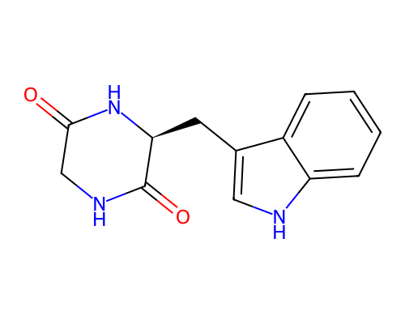
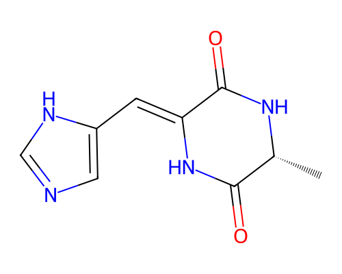

Georgenia sp. 40DY180
- Collection location
- Pacific Ocean (21.1° N, 159.2° E)
- Ocean / sea
- Pacific Ocean
- Sampling depth
- 5591 m (reported in checked main text)
- Reported coordinates
- 21.1, 159.2
DOI 10.1002/cbdv.202200037 ↗ · PubMed 35294106 ↗
PDF p1,p3
Recorded organism, strain, collection context and compound-linked source evidence.
A source profile groups recorded name variants. Primary-source review, strain identification and sequence verification are separate evidence decisions.
Compound activities are not automatically attributable to this strain, sample or source publication.
| Structure | Compound | Formula | MW (g/mol) | Reported source depth | Classification | Activity records | Admitted evidence rows |
|---|---|---|---|---|---|---|---|
 Structure image unavailable Structure image unavailable | 5-(4'-Hydroxybenzyl)hydantoinConnections → | C10H10N2O3 | 206.201 g/mol | 5591 m (reported in checked main text) | Alkaloid | 1 | 1 |
 Structure image unavailable | Cyclo(Trp-Gly)Connections → | C13H13N3O2 | 243.266 g/mol | 5591 m (reported in checked main text) | Alkaloid-Peptide | 1 | 1 |
 Structure image unavailable | Georgenione AConnections → | C9H10N4O2 | 206.205 g/mol | 5591 m (reported in checked main text) | Alkaloid | 1 | 1 |
Up to two results per compound are shown. Open the compound record for all results, conditions and restrictions.
Shared cited references are prioritized where available. A shared reference does not establish a strain-specific assay or the same experimental sample.
| Product | Recorded results | Result evidence |
|---|---|---|
| 5-(4'-Hydroxybenzyl)hydantoin | Mushroom tyrosinase IC50 = 36 ± 0.9 μM Evidence detailsPrimary result checkedShared cited reference; experimental attribution unconfirmed | |
| Cyclo(Trp-Gly) | Mushroom tyrosinase qualitative activity · Authors report compound3 inactive at the maximum tested concentration1mM in the mushroom tyrosinase assay; noIC50 is inferred. Evidence detailsPrimary result checkedShared cited reference; experimental attribution unconfirmed | |
| Georgenione A | Mushroom tyrosinase IC50 = 250 ± 6.8 μM Evidence detailsPrimary result checkedShared cited reference; experimental attribution unconfirmed |
Repeated source records are grouped with their associated compounds.
Associated compounds: Georgenione A
Associated compounds: 5-(4'-Hydroxybenzyl)hydantoin
Associated compounds: Cyclo(Trp-Gly)